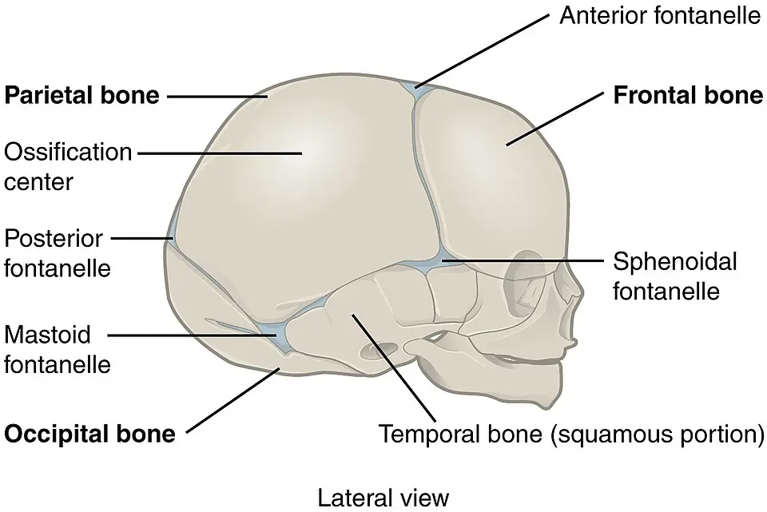
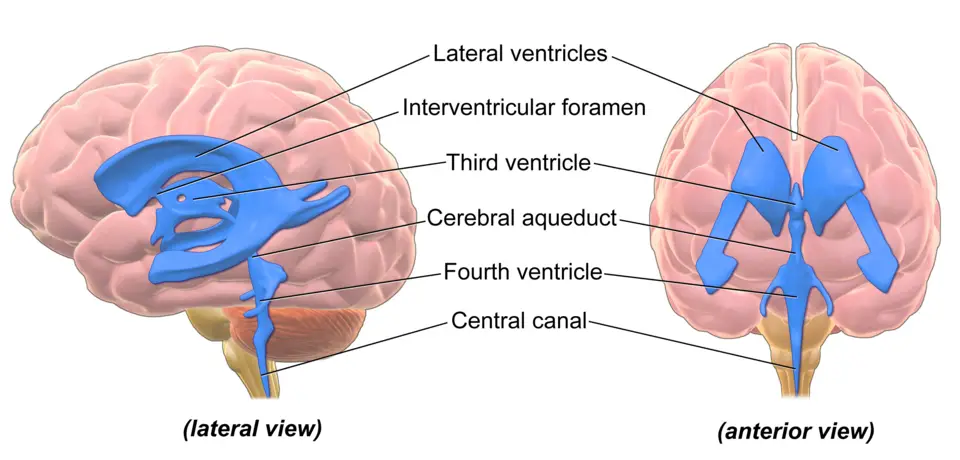
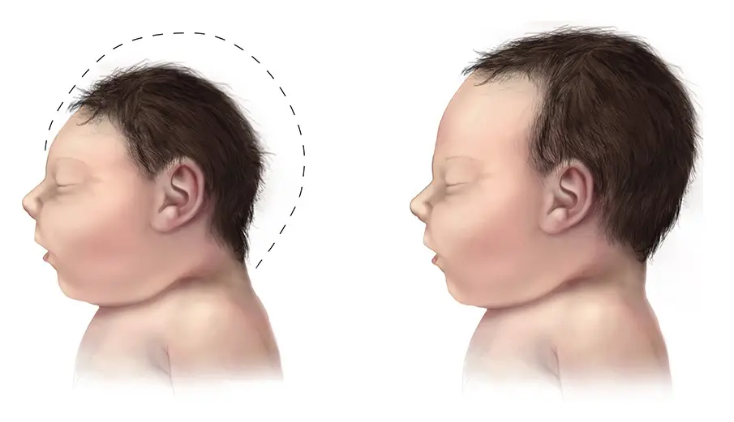

LOT_029 — S1.13 Microcéphalie et macrocéphalie — Phase A : monographie du SSP et dix diagnostics différentiels
Un périmètre crânien anormal traduit le contenu du crâne : le cerveau, le liquide, le sang, une masse ou des os soudés trop tôtS16S3. Le médecin exclut d’abord l’hydrocéphalie avec hypertension intracrânienne, l’hématome sous-dural du nourrisson et la tumeur cérébrale, car ces diagnostics menacent le cerveau à court termeS14S7S6. Il mesure ensuite la tête de façon standardisée, il suit la courbe et il compare l’enfant à ses parentsS14S15. Il ne prescrit enfin qu’en suivant l’AIPS (information professionnelle suisse) de chaque médicament, et il signale toute indication hors AIPSAIPS 55297AIPS 55905.
Contenu établi à partir des sources citées ; non validé cliniquement par un médecin.
1. Définition
La macrocéphalie désigne un périmètre crânien (PC) supérieur à 2 déviations standard (DS) au-dessus de la moyenne pour l’âge et le sexe, soit au-delà du 97e centileS16S21. La microcéphalie désigne un PC qui se situe à plus de 2 DS sous la moyenne pour l’âge et le sexe, ou sous le 3e centileS25. Elle est dite congénitale lorsque le PC est inférieur ou égal à −2 DS pour l’âge et le sexe dès la naissanceS20. Elle est dite acquise lorsque le PC, normal à la naissance, décroche ensuite par ralentissement de la croissance cérébraleS25. Le PC correspond au plus grand périmètre qui passe au-dessus des oreilles, par les bosses frontales et occipitalesS21.
2. Épidémiologie (Suisse, puis Europe)
En Suisse, pédiatrie suisse recommande depuis le 15 juin 2026 des courbes de croissance nationales, élaborées au Centre d’endocrinologie pédiatrique de ZurichS2. Les courbes utilisées depuis 2011 reposaient en partie sur les références de l’OMS (Organisation mondiale de la santé) et sur des données américainesS2.
Les chiffres suisses lus portent surtout sur les causes graves ou fréquentesS6S3S9. On compte ainsi 40 à 50 tumeurs du système nerveux central par an avant 14 ans, et une craniosténose sur 2000 à 2500 naissancesS6S3. L’Office fédéral de la santé publique (OFSP) évalue en outre à environ 1700 le nombre d’enfants qui naissent chaque année avec des troubles du spectre de l’alcoolisation fœtale (TSAF)S9.
Chiffres suisses lus : grossesse, naissance, enfance
| Indicateur | Valeur | Période ou lieu | Source |
|---|---|---|---|
| Femmes enceintes déjà immunisées contre le cytomégalovirus | Environ une sur deux | Suisse | S5 |
| Primo-infection à cytomégalovirus pendant la grossesse | 1 à 2 % des femmes enceintes | Suisse | S5 |
| Femmes enceintes ou allaitantes qui boivent au moins une fois par semaine | 17,7 % | Monitorage 2011–2016 | S9 |
| Consommation ponctuelle à risque (au moins quatre verres) au moins une fois par mois | Environ 6 % | Monitorage 2011–2016 | S9 |
| Enfants nés avec des troubles du spectre de l’alcoolisation fœtale | Environ 1700 par an, dont 170 à 425 syndromes complets | 85 000 naissances en 2017 | S9 |
| Tumeurs du système nerveux central avant 14 ans | 40 à 50 cas par an, pic entre 5 et 9 ans | Suisse | S6 |
| Craniosténoses | 1 naissance sur 2000 à 2500 | Lausanne, revue | S3 |
| Hydrocéphalie | Environ 1 cas pour 1000 naissances | Bâle | S11 |
Ces chiffres imposent deux questions systématiques pendant l’anamnèse : la consommation d’alcool et le contact avec de jeunes enfants pendant la grossesse. Cette conclusion relève d’une déduction, car les sources citées ne la formulent pas ainsi.
En Europe, la macrocéphalie touche jusqu’à 5 % des enfants, mais 2 à 3 % des enfants sains ont un PC situé entre +2 et +3 DSS16. Les indicateurs de fréquence fixent l’ordre de lecture des dix monographies, tandis que quatre rangs d’exclusion, E1 à E4, fixent l’ordre de recherche au lit du maladeS16S17S5.
Fréquence et gravité : pourquoi cet ordre
| Rang | Diagnostic | Donnée de fréquence lue | Lieu | Source |
|---|---|---|---|---|
| DX.1 | Macrocéphalie familiale constitutionnelle | La mégalencéphalie bénigne isolée est familiale dans plus de 50 % des cas ; 2 à 3 % des enfants sains ont un PC entre +2 et +3 DS. | Revue italienne, portugaise et canadienne | S16 |
| DX.2 | Élargissement bénin des espaces sous-arachnoïdiens du nourrisson | 0,4 pour 1000 naissances vivantes ; première cause de macrocéphalie du nourrisson. | Revue européenne | S17S16 |
| DX.3 🚩 E1 | Hydrocéphalie | Environ 1 cas pour 1000 naissances. | Bâle | S11 |
| DX.4 🚩 E2 | Hématome sous-dural | Collection sous-durale chez 128 des 1705 nourrissons avec élargissement bénin (7,5 %). | Revue européenne | S17 |
| DX.5 🚩 E3 | Tumeur intracrânienne | 40 à 50 cas par an avant 14 ans. | Suisse | S6 |
| DX.6 | Craniosténose | 1 naissance sur 2000 à 2500 ; scaphocéphalie 1 sur 5000. | Lausanne | S3 |
| DX.7 | Microcéphalie primitive génétique | Incidence entre 1/50 000 et 1/150 000. | France | S20 |
| DX.8 🚩 E4 | Infection congénitale à cytomégalovirus | Prévalence à la naissance de 0,4 à 0,6 % dans les pays à revenu élevé. | Suisse (revue) | S5 |
| DX.9 | Troubles du spectre de l’alcoolisation fœtale | Près de 20 enfants sur 1000 dans les pays occidentaux. | Suisse | S9 |
| DX.10 | Syndrome des hamartomes tumoraux lié à PTEN (phosphatase and tensin homolog) | Prévalence de 1:200.000 à 1:250.000. | Allemagne | S18 |
Le rang E ne suit pas la fréquence, car il mesure l’urgenceS14S5. L’hydrocéphalie avec hypertension intracrânienne passe donc en tête, puisque le NICE (National Institute for Health and Care Excellence) exige une orientation immédiateS14. L’infection à cytomégalovirus reçoit le rang E4, car son traitement n’a montré de bénéfice que s’il débute pendant le premier mois de vieS5.
Ces données mêlent prévalences à la naissance, incidences et proportions parmi les macrocéphalies, si bien que leurs limites rendent l’ordre seulement indicatifS16S9.
Limites des chiffres
- L’hydrocéphalie dépasse en fréquence l’élargissement bénin des espaces sous-arachnoïdiens ; l’ordre des fichiers DX.2 et DX.3 reste toutefois celui des monographies déjà rédigéesS11S17.
- L’infection à cytomégalovirus et les troubles liés à l’alcool dépassent la craniosténose en fréquence, mais les sources lues ne chiffrent pas la part de microcéphalie chez ces enfantsS5S9.
- Le chiffre suisse des troubles liés à l’alcool est une extrapolation d’une prévalence internationale à 85 000 naissances, et non un registre nationalS9.
- La revue suisse sur le syndrome d’alcoolisation fœtale place la Suisse parmi les 76 pays sur 187 dont la prévalence dépasse 1 %S8.
- Le chiffre suisse des tumeurs couvre toutes les tumeurs du système nerveux central, et il ne se limite pas aux tumeurs révélées par une macrocéphalieS6.
- Aucune incidence suisse de l’hématome sous-dural du nourrisson n’a été lue ; l’Inselspital de Berne a seulement noté une hausse nette des suspicions en 2022 et 2023S7.
3. Physiopathologie
Le PC traduit le volume du contenu crânien, si bien qu’une macrocéphalie reflète soit un gros cerveau, nommé mégalencéphalie, soit un excès de liquide, de sang ou de tissuS16. La microcéphalie traduit au contraire un cerveau qui ne croît pas assez, par défaut génétique ou par agression prénataleS20S5S8.
Les cinq compartiments du crâne rattachent chaque diagnostic à son mécanisme, ce qui oriente ensuite le choix de l’imagerieS16S3.
Cinq compartiments, cinq mécanismes
| Compartiment | Mécanisme | Diagnostic du lot | Indice clinique | Source |
|---|---|---|---|---|
| Cerveau trop gros | Prolifération neuronale accrue, souvent d’origine génétique | DX.1 Macrocéphalie familiale ; DX.10 Syndrome lié à PTEN | PC élevé et stable, parents macrocéphales ou signes cutanés | S16S18 |
| Liquide cérébrospinal en surface | Excès de liquide sur les convexités frontales, ventricules normaux ou peu dilatés | DX.2 Élargissement bénin des espaces sous-arachnoïdiens | Accélération vers 6 mois, développement normal | S16 |
| Liquide cérébrospinal dans les ventricules | Obstacle à l’écoulement ou défaut de résorption | DX.3 Hydrocéphalie | Fontanelle bombée, regard en coucher de soleil, vomissements | S10S14 |
| Sang ou masse | Collection sous-durale ; tumeur qui comprime ou bloque l’aqueduc | DX.4 Hématome sous-dural ; DX.5 Tumeur intracrânienne | Irritabilité, convulsion, vomissements à jeun | S7S6 |
| Os du crâne | Fusion précoce d’une suture qui bride la croissance perpendiculaire | DX.6 Craniosténose | Forme anormale plutôt que taille anormale | S3 |
Cette grille relève d’une synthèse : elle répartit les causes que la revue d’Accogli décrit, puis elle y range la craniosténose décrite par l’équipe du CHUV (Centre hospitalier universitaire vaudois)S16S3.
Les microcéphalies se divisent en formes primitives, présentes dès la naissance par défaut de production neuronale, et en formes secondaires à une agression du cerveau en développementS20S5S8.
Microcéphalie primitive ou secondaire
| Type | Mécanisme | Diagnostic du lot | Indice | Source |
|---|---|---|---|---|
| Primitive génétique | Les gènes ASPM (abnormal spindle-like microcephaly associated), WDR62 (WD repeat domain 62) et CDK5RAP2 codent des protéines qui contrôlent la division des progéniteurs neuronaux ; leur défaut épuise ce stock. | DX.7 | Transmission autosomique récessive ; risque de récurrence de 25 % par grossesse | S20 |
| Secondaire infectieuse | Le cytomégalovirus atteint surtout le cerveau lorsque la primo-infection maternelle survient autour de la conception ou au premier trimestre. | DX.8 | Surdité, calcifications, pétéchies, hépatosplénomégalie | S5S19 |
| Secondaire toxique | L’alcool freine la croissance du PC ou des trois paramètres de croissance, et le cervelet y est particulièrement vulnérable. | DX.9 | Petites fentes palpébrales, philtrum effacé, lèvre supérieure fine | S8 |
Le gène ASPM code une protéine localisée au pôle du fuseau mitotique, qui maintient les divisions prolifératives des cellules souches neuralesS20. Son absence épuise donc prématurément le stock de progéniteurs, ce qui explique un cerveau petit mais bien organisé dans la plupart des casS20.
Le crâne du nouveau-né reste mobile, car des sutures fibreuses séparent ses os et laissent le cerveau en croissance pousser la voûteS3. La suture métopique commence à se fermer vers 2 mois, alors que les autres sutures ne démarrent leur fermeture qu’après 1 anS3. Une suture soudée trop tôt déforme le crâne et peut entraîner une hypertension intracrânienne (HTIC), qui gêne le développement cérébralS4S3.
Crâne du nouveau-né : fontanelles et sutures. OpenStax College fournit cette illustration en couleurs sous licence CC BY 3.0S23.

Lisez d’abord seul ce cliché : repérez les fontanelles et les sutures avant d’ouvrir la copie annotée.
La copie annotée est numérotée en six repères osseux, selon l’ordre de la lecture guidée.
- 1. Le repère 1 montre la fontanelle antérieure, qui permet l’échographie transfontanellaire tant qu’elle reste ouverte et qui bombe dans l’hypertension intracrânienne.S23S16S14
- 2. Le repère 2 montre la suture coronale, entre l’os frontal et l’os pariétal ; sa fusion unilatérale aplatit un côté du front.S23S3
- 3. Le repère 3 montre la fontanelle postérieure, au sommet de la suture lambdoïde, dont la fusion donne une plagiocéphalie postérieure en trapèze.S23S3
- 4. Le repère 4 montre la fontanelle sphénoïdale, à la jonction des os frontal, pariétal, temporal et sphénoïde.S23
- 5. Le repère 5 montre la fontanelle mastoïdienne, à l’extrémité inférieure de la suture lambdoïde.S23
- 6. Le repère 6 montre le centre d’ossification de l’os pariétal, dont l’écartement avec son homologue matérialise la suture sagittale, soudée dans la scaphocéphalie.S23S3
Ce que l’image décide. Une fontanelle antérieure ouverte permet une échographie sans sédation, tandis qu’une fontanelle fermée conduit directement à l’IRM (imagerie par résonance magnétique)S16S11. Une forme anormale du crâne oriente vers une suture, alors qu’une taille anormale oriente vers le contenu.
Le liquide cérébrospinal (LCR) passe des ventricules latéraux au troisième ventricule, puis il rejoint par l’aqueduc le quatrième ventricule et les espaces sous-arachnoïdiensS22S10. Un obstacle sur ce trajet dilate les cavités situées en amont, ce qui définit l’hydrocéphalie obstructiveS16S10.
Ventricules cérébraux : où l’écoulement peut se bloquer. Blausen Medical fournit cette illustration en couleurs sous licence CC BY 3.0S22.

Lisez d’abord seul ce cliché : suivez le trajet du liquide des ventricules latéraux jusqu’au canal central.
La copie annotée est numérotée en cinq cavités, du haut vers le bas du système ventriculaire.
- 1. Le repère 1 montre le ventricule latéral, qui se dilate en premier dans toute hydrocéphalie obstructive.S22S16
- 2. Le repère 2 montre le troisième ventricule, dilaté lui aussi lorsque l’obstacle siège sur l’aqueduc.S22S10
- 3. Le repère 3 montre l’aqueduc cérébral, dont la sténose se traite souvent par ventriculocisternostomie endoscopique.S22S10
- 4. Le repère 4 montre le quatrième ventricule, que les tumeurs de la fosse postérieure compriment fréquemment chez l’enfant.S22S16
- 5. Le repère 5 montre le canal central de la moelle, qui prolonge le système ventriculaire vers le bas.S22
Ce que l’image décide. Une dilatation des seuls ventricules en amont d’un point signe une hydrocéphalie obstructive, tandis qu’un excès de liquide sur les lobes frontaux sans compression oriente vers l’élargissement béninS16S17.
4. Démarche diagnostique
Étape 1 — Mesurer juste
Le NICE demande avant 4 ans trois mesures consécutives au ruban de papier jetable, puis il fait reporter la plus grande sur une courbe corrigée pour l’âge gestationnelS14S15. La technique de mesure conditionne toute la suite, car une erreur de quelques millimètres fait franchir un centileS15S21.
Technique de mesure et lecture de la courbe
| Étape | Geste | Seuil ou règle | Source |
|---|---|---|---|
| Matériel | Ruban de papier jetable à usage unique | Même méthode à chaque consultation | S15 |
| Trajet | Plus grand périmètre passant au-dessus des oreilles, par les bosses frontales et occipitales | Mesure reproductible | S21 |
| Répétition | Trois mesures consécutives à la même consultation | Le NICE retient la plus grande ; l’AFPA (Association française de pédiatrie ambulatoire) retient la mesure intermédiaire | S14S21 |
| Report | Courbe standardisée, corrigée pour l’âge gestationnel ; en Suisse, courbes nationales 2026 | Report daté, comparé aux mesures antérieures | S14S2 |
| Famille | Mesure du PC des parents et de la fratrie | Toujours en cas de macrocéphalie | S21S16 |
| Proportions | Comparaison du PC avec la taille et le poids | Macrocéphalie relative : PC inférieur à +2 DS mais disproportionné | S16 |
Les deux sources divergent sur la mesure retenue ; le cours suit le NICE, dont la règle s’accompagne de seuils d’orientation explicitesS14S21.
Étape 2 — Exclure les graves
Le médecin cherche d’abord les quatre urgences du lot, car elles exigent une action dans des délais courtsS14S7S6S5. Le NICE fait ainsi imager tout enfant dont le PC change de deux lignes de centiles, et il exige une orientation immédiate en présence de signes d’HTICS14.
Rangs d’exclusion E1 à E4 : critère, examen, délai
| Rang | Diagnostic | Critère d’alerte | Examen qui tranche | Délai | Source |
|---|---|---|---|---|---|
| 🚩 E1 | DX.3 Hydrocéphalie évolutive | PC qui croise au moins deux lignes de centiles avec fontanelle tendue, regard en coucher de soleil, vomissements, ataxie ou céphalée | Échographie transfontanellaire ou IRM | Orientation immédiate en pédiatrie | S14 |
| 🚩 E2 | DX.4 Hématome sous-dural | Nourrisson irritable ou convulsant, ecchymoses inexpliquées ; collection sous-durale à l’imagerie | IRM cérébrale et médullaire, fond d’œil, radiographies du squelette | Hospitalisation et protocole de protection de l’enfant | S7S17 |
| 🚩 E3 | DX.5 Tumeur intracrânienne | Céphalées et vomissements à jeun, cassure de la croissance, PC qui accélère | IRM cérébrale avec produit de contraste, puis IRM médullaire | Investigations rapides | S6 |
| 🚩 E4 | DX.8 Infection congénitale à cytomégalovirus | Microcéphalie, pétéchies, hépatosplénomégalie, ictère ou surdité chez le nouveau-né | PCR (amplification génique) du virus sur urine ou salive | Avant 21 jours de vie, traitement avant 1 mois | S5S19 |
Le rang E4 ne traduit pas une urgence vitale : il traduit une fenêtre thérapeutique courte, puisque le bénéfice antiviral n’est démontré qu’avant 1 mois de vieS5.
Étape 3 — Situer l’enfant
Le médecin confronte ensuite la cinétique du PC, le développement, la forme du crâne et le PC des parentsS14S16S3. Le tableau comparatif des dix diagnostics rassemble ces éléments pour chaque causeS16S3S20. Un enfant au PC élevé mais stable, au développement normal et sans signe d’HTIC ne doit pas être adressé de routine si un parent a aussi une grosse têteS14.
Tableau comparatif des dix diagnostics
| Diagnostic | Fréquence | Âge de révélation | PC | Cinétique | Signe clé | Examen qui tranche | Résultat décisif | Conduite immédiate | Rang |
|---|---|---|---|---|---|---|---|---|---|
| DX.1 Macrocéphalie familiale constitutionnelle | Fréquente : familiale dans plus de 50 % des mégalencéphalies isoléesS16 | Nourrisson ou plus tard | Au-delà de +2 DS | Stable, parallèle aux centiles | Parent macrocéphale, développement normal | Mesure du PC des parents | PC parental élevé, aucun signe d’HTICS14 | Pas d’orientation de routine ; suivi de la courbe | — |
| DX.2 Élargissement bénin des espaces sous-arachnoïdiens | 0,4 pour 1000 naissancesS17 | Accélération vers 6 mois | Au-delà de +2 DS | Montée rapide, plateau vers 18 moisS16 | Développement normal, fontanelle souple | Échographie transfontanellaire | Espace cranio-cortical au-delà de 5 mm, veines corticales qui traversent le liquideS17S16 | Surveillance ; IRM et bilan de maltraitance si collection sous-durale | — |
| DX.3 Hydrocéphalie | Environ 1 pour 1000 naissancesS11 | Fœtus, nourrisson, enfant | Au-delà de +2 DS | Croisement d’au moins deux lignes de centilesS14 | Fontanelle bombée, coucher de soleil, vomissements | Échographie puis IRM | Dilatation ventriculaire en amont d’un obstacle | Orientation immédiate en pédiatrie, puis neurochirurgie après imagerie | 🚩 E1 |
| DX.4 Hématome sous-dural | 7,5 % des élargissements béninsS17 | Nourrisson | Normal ou élevé | Accélération possible | Irritabilité, convulsion, ecchymoses | IRM et fond d’œil | Collection sans veine qui la traverse ; hémorragies rétiniennesS16S7 | Hospitalisation, groupe de protection de l’enfant | 🚩 E2 |
| DX.5 Tumeur intracrânienne | 40 à 50 cas par an en Suisse avant 14 ansS6 | Pic entre 5 et 9 ans | Élevé si hydrocéphalie | Accélération chez le petit enfant | Vomissements à jeun, céphalées, troubles visuels | IRM avec produit de contraste | Masse, souvent infratentorielle, avec hydrocéphalieS16 | Investigations rapides, neuro-oncologie pédiatrique | 🚩 E3 |
| DX.6 Craniosténose | 1 sur 2000 à 2500 naissancesS3 | Naissance ou premiers mois | Souvent normal | Croissance déformée | Forme anormale : bateau, triangle, aplatissement | Examen clinique | Diagnostic clinique ; scanner réservé au bilan chirurgicalS3 | Avis en neurochirurgie pédiatrique | — |
| DX.7 Microcéphalie primitive génétique | 1/50 000 à 1/150 000S20 | Naissance | −2 DS ou moins à la naissance, inférieur à −3 DS après 6 mois | S’aggrave jusqu’à −5 à −11 DS à l’âge adulteS20 | Déficience intellectuelle, épilepsie | Séquençage d’un panel, de l’exome ou du génome | Variant pathogène bi-allélique d’ASPM, WDR62 ou CDK5RAP2S20 | Génétique et neuropédiatrie | — |
| DX.8 Infection congénitale à cytomégalovirus | 0,4 à 0,6 % des naissancesS5 | Naissance | Diminué | Variable | Surdité, pétéchies, hépatosplénomégalie | PCR sur urine ou salive | PCR positive avant 21 jours de vieS5 | Bilan d’extension immédiat, traitement avant 1 mois | 🚩 E4 |
| DX.9 Troubles du spectre de l’alcoolisation fœtale | Près de 20 sur 1000 naissancesS9 | Âge moyen de 3,3 ans au diagnosticS8 | Diminué ou normal | Croissance ralentie | Petites fentes palpébrales, philtrum effacé, lèvre fine | Anamnèse d’exposition et examen du visage | Retard de croissance, faciès et atteinte neurodéveloppementale réunisS8 | Soutien du développement et des apprentissages | — |
| DX.10 Syndrome des hamartomes tumoraux lié à PTEN | 1:200.000 à 1:250.000S18 | Naissance ou petite enfance | Souvent +3 DS et plusS18 | Élevé dès les premières années | Autisme, lentigines du pénis, lipomes | Analyse du gène PTEN | Variant pathogène constitutionnel de PTEN | Conseil génétique, surveillance tumorale annuelle | — |
5. Anamnèse ciblée et drapeaux rouges
L’anamnèse commence par la grossesse, puis elle reconstruit la courbe du PC depuis la naissance, le développement et les antécédents familiauxS20S16. Les questions ciblées relient chaque réponse évocatrice à un diagnostic du lot, ce qui évite un bilan à l’aveugleS16S8S5.
Questions ciblées et réponses qui orientent
| Question | Réponse évocatrice | Orientation | Source |
|---|---|---|---|
| Quel est le PC du père, de la mère et de la fratrie ? | Un parent dépasse lui aussi +2 DS | DX.1 Macrocéphalie familiale | S16S14 |
| Quand la tête a-t-elle grossi ? | Montée rapide vers 6 mois, puis plateau | DX.2 Élargissement bénin | S16 |
| L’enfant vomit-il, dort-il trop, regarde-t-il vers le bas ? | Oui, avec irritabilité | DX.3 Hydrocéphalie ou DX.5 Tumeur | S14S16 |
| Le nourrisson a-t-il eu des convulsions ou des ecchymoses inexpliquées ? | Oui, sans accident rapporté | DX.4 Hématome sous-dural infligé | S7 |
| La mère a-t-elle bu de l’alcool pendant la grossesse ? | Oui, même par épisodes | DX.9 Troubles liés à l’alcool | S8S9 |
| La mère vivait-elle avec de jeunes enfants ou travaillait-elle en crèche au premier trimestre ? | Oui, avec une sérologie inconnue ou négative | DX.8 Cytomégalovirus | S5 |
| La mère a-t-elle pris du valproate ? | Oui | DX.6 Trigonocéphalie | S3 |
| La famille compte-t-elle des fausses couches répétées ou un autre enfant microcéphale ? | Oui | DX.7 Microcéphalie primitive récessive | S20 |
| L’enfant présente-t-il un trouble du spectre de l’autisme ? | Oui, avec macrocéphalie marquée | DX.10 Syndrome lié à PTEN | S18 |
Les drapeaux rouges imposent une action datée, tandis qu’un PC élevé et stable chez un enfant qui se développe normalement autorise la simple surveillanceS14S16.
Drapeaux rouges : signe, action, délai
| Drapeau rouge | Diagnostic à exclure | Action | Délai | Source |
|---|---|---|---|---|
| Fontanelle tendue ou bombée | Hydrocéphalie, hématome, tumeur | Orientation en pédiatrie et imagerie | Immédiat | S14S16 |
| Regard en coucher de soleil ou paralysie du nerf abducens | Hypertension intracrânienne | Orientation en pédiatrie | Immédiat | S14 |
| Vomissements, céphalées, ataxie | Hypertension intracrânienne, tumeur de la fosse postérieure | Orientation et IRM | Immédiat | S14S6 |
| Convulsion ou trouble de conscience chez le nourrisson | Hématome sous-dural infligé | Urgences, IRM, fond d’œil | Immédiat | S7S16 |
| Croisement d’au moins deux lignes de centiles | Hydrocéphalie ou microcéphalie évolutive | Orientation et imagerie cérébrale | Rapide | S14 |
| Régression du développement | Maladie métabolique, tumeur | Neuropédiatrie | Rapide | S16S6 |
| Dysmorphie avec retard du développement | Syndrome génétique ou craniosténose syndromique | Orientation urgente en pédiatrie | Urgent | S14 |
| Souffle sur la fontanelle ou insuffisance cardiaque | Malformation vasculaire intracrânienne | IRM et avis spécialisé | Rapide | S16 |
6. Examen physique ciblé, région par région
L’examen parcourt sept régions, et chacune a sa propre fenêtreS16S14. Le médecin regarde la tête et les yeux, puis il examine le visage, la peau et le système nerveux. Il termine par la croissance, puis par les organes et l’audition.
Tête : taille, forme, fontanelle
| Geste | Constat | Interprétation | Source |
|---|---|---|---|
| Mesurer le PC trois fois | Valeur et position sur la courbe | Au-delà de +2 DS : macrocéphalie ; au-delà de +3 DS : macrocéphalie cliniquement pertinente | S14S16 |
| Regarder le crâne d’en haut | Crâne long en proue de bateau | Scaphocéphalie par fusion de la suture sagittale | S3 |
| Regarder le front | Front triangulaire | Trigonocéphalie par fusion de la suture métopique | S3 |
| Comparer les deux côtés | Parallélogramme | Plagiocéphalie positionnelle, sans fusion | S3S14 |
| Comparer les deux côtés | Trapèze | Plagiocéphalie postérieure par fusion lambdoïde | S3 |
| Mesurer l’angle externe de l’œil jusqu’au tragus, des deux côtés | Distances différentes | Plagiocéphalie positionnelle confirmée | S14 |
| Palper la fontanelle antérieure, enfant calme | Tendue ou bombée | Hypertension intracrânienne | S14S11 |
| Ausculter la fontanelle | Souffle | Malformation vasculaire intracrânienne | S16 |
Yeux : regard, fond d’œil, fentes palpébrales
| Geste | Constat | Interprétation | Source |
|---|---|---|---|
| Observer le regard | Regard fixé vers le bas, en coucher de soleil | Hypertension intracrânienne | S14 |
| Tester l’abduction | Paralysie du nerf abducens | Hypertension intracrânienne | S14 |
| Fond d’œil | Œdème papillaire | Hypertension intracrânienne ; recherché dans la craniosténose | S3S6 |
| Fond d’œil par un ophtalmologue expérimenté | Hémorragies rétiniennes étendues | Traumatisme crânien infligé | S7S17 |
| Mesurer la fente palpébrale et la reporter sur sa courbe | Inférieure à −2 DS | Micro-fente des troubles liés à l’alcool | S8 |
| Fond d’œil chez le nouveau-né infecté | Anomalie du fond d’œil | Atteinte ophtalmologique du cytomégalovirus, qui justifie le traitement | S5 |
Visage : dysmorphie et proportions
| Constat | Interprétation | Diagnostic | Source |
|---|---|---|---|
| Petites fentes palpébrales, philtrum effacé, lèvre supérieure fine | Faciès du syndrome d’alcoolisation fœtale | DX.9 | S8 |
| Front large et proéminent, fentes palpébrales obliques vers le bas, menton pointu | Syndrome de Sotos, diagnostic différentiel de surcroissance | Hors lot | S16 |
| Bosses frontales et hypertélorisme dès les premiers mois | Syndrome de Gorlin, ou naevomatose basocellulaire | Hors lot ; risque de médulloblastome | S16 |
| Aplatissement frontal unilatéral avec orbite relevée | Plagiocéphalie antérieure par fusion coronale | DX.6 | S3 |
Peau : marqueurs génétiques et lésions infligées
| Constat | Interprétation | Diagnostic | Source |
|---|---|---|---|
| Lentigines du gland chez le garçon | Présentes chez environ la moitié des garçons porteurs, souvent visibles au milieu de l’enfance | DX.10 Syndrome lié à PTEN | S18 |
| Lipomes, hémangiomes | Hamartomes cutanés | DX.10 | S18 |
| Taches café-au-lait et lentigines des plis | Neurofibromatose de type 1, macrocéphalie dans 35 à 45 % des cas | Hors lot ; prédisposition aux gliomes | S16S6 |
| Malformation capillaire, syndactylie | Syndrome mégalencéphalie-malformation capillaire | Hors lot | S16 |
| Ecchymoses chez un nourrisson qui ne se déplace pas seul | Lésion potentiellement infligée | DX.4 | S7 |
| Pétéchies, ictère | Infection congénitale | DX.8 | S19 |
Système nerveux : développement et signes de souffrance
| Geste | Constat | Interprétation | Source |
|---|---|---|---|
| Reprendre les acquisitions motrices et langagières | Retard ou régression | Cause organique probable ; imagerie et génétique | S20S16 |
| Observer comportement et éveil | Irritabilité extrême ou somnolence | Signe d’hypertension intracrânienne | S16 |
| Observer la marche | Ataxie | Hypertension intracrânienne ou atteinte cérébelleuse | S14S8 |
| Rechercher des crises | Spasmes, crises focales ou généralisées | Microcéphalie primitive, hématome sous-dural | S20S7 |
| Évaluer la communication sociale | Trouble du spectre de l’autisme | Rechercher PTEN si la macrocéphalie est marquée | S18 |
Croissance : poids, taille et PC ensemble
| Constat | Interprétation | Diagnostic | Source |
|---|---|---|---|
| PC élevé, poids et taille normaux | Macrocéphalie isolée | DX.1, DX.2, DX.10 | S16 |
| PC élevé, taille et poids élevés | Syndrome de surcroissance généralisée | Hors lot (Sotos, Beckwith-Wiedemann) | S16 |
| PC élevé, petite taille disproportionnée | Achondroplasie, toujours associée à une macrocéphalie | Hors lot | S16 |
| PC bas avec retard de croissance intra-utérin | Microcéphalie primitive avec rattrapage staturo-pondéral entre 2 et 5 ans | DX.7 | S20 |
| PC, poids et taille tous bas | Atteinte toxique globale | DX.9 | S8 |
Organes, thyroïde et audition
| Geste | Constat | Interprétation | Source |
|---|---|---|---|
| Palper le foie et la rate | Hépatosplénomégalie | Infection congénitale ou maladie de surcharge | S19S16 |
| Palper la thyroïde | Nodule | Syndrome lié à PTEN : échographie thyroïdienne | S18 |
| Dépister l’audition | Surdité de perception | Cytomégalovirus congénital | S5 |
| Examiner les membres | Hémihypertrophie ou lipome volumineux | Surcroissance segmentaire, parfois liée à PTEN | S18S16 |
Microcéphalie : ce que l’œil voit avant le ruban. Les Centers for Disease Control and Prevention (CDC) fournissent cette illustration en couleurs, versée au domaine publicS24.

Lisez d’abord seul ce dessin : comparez la voûte et la face des deux nourrissons avant d’ouvrir la copie annotée.
La copie annotée numérote trois repères, qui opposent la voûte attendue et la voûte réduite.
- 1. Le repère 1 montre le contour pointillé de la tête attendue pour cet âge, que le PC mesuré n’atteint pas.S24
- 2. Le repère 2 montre la voûte basse de l’enfant microcéphale, alors que la face garde une taille normale.S24
- 3. Le repère 3 montre la voûte d’un nourrisson au PC typique, qui sert de référence.S24
Ce que l’image décide. Une voûte petite pour une face normale impose la mesure standardisée, puis l’orientation si le PC passe sous le 2e centile avant 4 ans, seuil d’orientation du NICES14.
7. Approche syndromique
Cinq syndromes structurent le tri : la macrocéphalie isolée et stable, la macrocéphalie évolutive, la macrocéphalie syndromique, la microcéphalie et la forme anormale du crâneS14S16S3. Le tableau des syndromes associe à chacun ses diagnostics et sa première décision, ce qui évite d’irradier un enfant sainS16S3.
Cinq syndromes, cinq premières décisions
| Syndrome | Définition opérationnelle | Diagnostics du lot | Première décision | Source |
|---|---|---|---|---|
| Macrocéphalie isolée et stable | PC au-delà du 98e centile, sans croisement de deux lignes, développement normal, aucun signe d’HTIC | DX.1, DX.2 | Mesurer les parents ; pas d’orientation de routine si la macrocéphalie est familiale | S14 |
| Macrocéphalie évolutive | PC qui croise au moins deux lignes de centiles, avec ou sans signes d’HTIC | DX.3, DX.4, DX.5, DX.2 | Imagerie cérébrale ; orientation immédiate si signes d’HTIC | S14 |
| Macrocéphalie syndromique | Macrocéphalie avec retard, autisme, dysmorphie ou signes cutanés | DX.10, autres mégalencéphalies génétiques | Génétique et IRM, qui reste l’examen de meilleure précision | S16S18 |
| Microcéphalie | PC inférieur à −2 DS ou au 3e centile, congénitale ou acquise ; avant 4 ans, orientation sous le 2e centile | DX.7, DX.8, DX.9 | Orientation en pédiatrie ; PCR du cytomégalovirus si l’enfant a moins de 21 jours | S25S14S5 |
| Forme anormale du crâne | Crâne en bateau, en triangle ou aplati | DX.6, plagiocéphalie positionnelle | Examen clinique ; orientation en neurochirurgie pédiatrique si une suture paraît soudée | S3S14 |
Le NICE retient le 98e centile pour la macrocéphalie stable, alors que la définition retient +2 DS ou le 97e centile ; cette nuance ne change pas la conduiteS14S16.
8. Diagnostic positif et critères
Le diagnostic positif repose sur des seuils chiffrés, car la mesure, l’échographie et la morphométrie du visage fournissent chacune une limite expliciteS16S17S8.
Seuils d’interprétation
| Paramètre | Seuil | Signification | Source |
|---|---|---|---|
| PC | Au-delà de +2 DS ou du 97e centile | Macrocéphalie | S16 |
| PC | Au-delà de +3 DS | Macrocéphalie cliniquement pertinente ; 2 à 3 % des enfants sains se situent entre +2 et +3 DS | S16 |
| PC à la naissance | −2 DS ou moins | Microcéphalie congénitale | S20 |
| PC après 6 mois | Inférieur à −3 DS | Critère de microcéphalie primitive | S20 |
| PC avant 4 ans | Sous le 2e centile | Évaluation pédiatrique (seuil d’orientation, non définition) | S14 |
| Évolution du PC | Écart d’au moins deux lignes de centiles | Imagerie pour exclure une hydrocéphalie ou une microcéphalie évolutive | S14 |
| Espace cranio-cortical | Au-delà de 5 mm ; au-delà de 10 mm | Espace élargi ; espace nettement élargi, quel que soit l’examen | S17 |
| Espace cranio-cortical normal | 3,3 à 5 mm chez le nouveau-né ; 4 à 10 mm avant 1 an | Limites supérieures publiées | S17 |
| Fente palpébrale | Inférieure à −2 DS | Micro-fente des troubles liés à l’alcool | S8 |
| PC dans le syndrome lié à PTEN | +3 DS et plus avant 2 ans | Macrocéphalie marquée et précoce | S18 |
| Avidité des IgG (immunoglobulines G) anti-cytomégalovirus | Au-delà de 60 % ; sous 30 % | Infection récente exclue ; primo-infection de moins de trois mois | S5 |
Les critères de chaque diagnostic réunissent un élément positif et un élément qui écarte la confusion la plus fréquenteS16S17S3S20.
Critères positifs et piège principal
| Diagnostic | Critères positifs | Ce qui écarte la confusion | Source |
|---|---|---|---|
| DX.1 Macrocéphalie familiale | PC au-delà du 98e centile, stable, parent macrocéphale, développement normal | Absence de signe d’HTIC et de croisement de lignes | S14S16 |
| DX.2 Élargissement bénin | Liquide en excès sur les deux lobes frontaux, scissure interhémisphérique élargie, sans compression corticale | Signe de la veine corticale, qui le sépare d’une collection sous-durale | S17S16 |
| DX.3 Hydrocéphalie | Dilatation ventriculaire, souvent avec signes d’HTIC | Recherche du siège de l’obstacle pour séparer forme obstructive et communicante | S16 |
| DX.4 Hématome sous-dural | Collection sous-durale, avec hémorragies rétiniennes ou fractures dans les formes infligées | Bilan complet de maltraitance, même avec un élargissement bénin | S17S7 |
| DX.5 Tumeur intracrânienne | Masse à l’IRM avec produit de contraste | IRM médullaire pour exclure des métastases | S6 |
| DX.6 Craniosténose | Forme typique liée à la suture soudée | Plagiocéphalie positionnelle en parallélogramme, sans fusion | S3 |
| DX.7 Microcéphalie primitive | Microcéphalie congénitale, variant pathogène de ASPM, WDR62 ou CDK5RAP2 | Exclusion des causes secondaires et des syndromes reconnaissables | S20 |
| DX.8 Cytomégalovirus congénital | PCR positive sur urine ou salive avant 21 jours ; une PCR salivaire positive se confirme par une PCR urinaire ; après 21 jours, la PCR porte sur le sang séché du dépistage néonatal, référence rétrospective qui peut manquer des cas : un résultat négatif n’exclut pas l’infection | La sérologie néonatale ne confirme ni n’exclut l’infection ; la salive donne des faux positifs après une tétée récente | S5S19 |
| DX.9 Syndrome d’alcoolisation fœtale | Retard de croissance, faciès typique et atteinte neurodéveloppementale réunis | Les formes partielles exigent une exposition prouvée ou fortement supposée | S8 |
| DX.10 Syndrome lié à PTEN | Macrocéphalie marquée et variant constitutionnel de PTEN | Proteus et autres surcroissances diffèrent cliniquement | S18 |
9. Examens complémentaires
9.a — Imagerie. L’échographie transfontanellaire passe en premier tant que la fontanelle reste ouverte, car elle n’exige ni sédation ni rayonnementS16S11. L’IRM reste l’examen de meilleure précision, tandis que le scanner ne sert qu’exceptionnellement, par exemple au bilan opératoire d’une craniosténoseS16S6S3. Le choix de l’imagerie dépend donc de la question posée.
Quelle imagerie pour quelle question
| Question | Examen préféré | Pourquoi | Limite | Source |
|---|---|---|---|---|
| Liquide en surface ou dans les ventricules ? | Échographie transfontanellaire | Sans sédation, sans rayonnement, Doppler couleur des veines corticales | Impossible après fermeture de la fontanelle | S16S17 |
| Mégalencéphalie, malformation, tumeur ? | IRM cérébrale | Meilleure précision diagnostique | Anesthésie souvent nécessaire jusqu’à 7 à 9 ans | S16S11 |
| Tumeur confirmée ? | IRM avec produit de contraste, puis IRM médullaire | Recherche de métastases macroscopiques | Bilan hors du système nerveux inutile en routine | S6 |
| Suture soudée avant chirurgie ? | Scanner en fenêtre osseuse avec reconstruction en 3 dimensions | Analyse de toutes les sutures | Réservé à la planification chirurgicale | S3 |
| Suivi d’une hydrocéphalie ? | IRM rapide ou scanner à très faible dose | Contrôles répétés | Rayonnement cumulé pour le scanner | S16 |
Avant l’IRM du nourrisson, on essaie d’abord la technique « nourrir et emmailloter », afin d’éviter la sédationS16.
9.b — Examens ciblés. Le tableau des examens ciblés précise pour chacun l’indication, le seuil d’interprétation et la conduite, selon les sociétés suisses puis européennesS5S7S18S20.
Examen ciblé : indication, seuil, interprétation, conduite
| Examen | Indication | Seuil ou résultat | Interprétation | Conduite | Source |
|---|---|---|---|---|---|
| PCR du cytomégalovirus sur urine ou salive | Nouveau-né exposé ou symptomatique | Positive | Infection congénitale, si le prélèvement date de moins de 21 jours ; salive positive à confirmer sur urine | Bilan d’extension immédiat | S5S19 |
| Audition : otoémissions acoustiques, puis potentiels évoqués auditifs | Cytomégalovirus congénital | Surdité de perception | Atteinte qui justifie le traitement, même isolée | Discussion d’un antiviral avant 1 mois | S5 |
| Formule sanguine et tests hépatiques | Cytomégalovirus congénital | Thrombopénie ou transaminases élevées isolées | Atteinte biologique | Traitement court de six semaines | S5 |
| Fond d’œil par un ophtalmologue | Hématome sous-dural du nourrisson ; hypertension intracrânienne | Hémorragies rétiniennes étendues ; œdème papillaire | Lésion infligée probable ; HTIC | Protocole de protection de l’enfant ; neurochirurgie | S7S17S3 |
| Radiographies complètes du squelette | Nourrisson avec collection sous-durale | Fractures de côtes ou métaphysaires | Fractures de côtes dans 22 % et fractures métaphysaires dans 23 % des traumatismes infligés | Protocole de protection de l’enfant | S7S17 |
| IRM de la colonne vertébrale | Suspicion de traumatisme crânien infligé | Hémorragie médullaire | Présente dans 24 % des cas | Ne pas l’omettre | S7 |
| Panel de gènes, exome ou génome | Microcéphalie congénitale inexpliquée | Variant pathogène homozygote ou hétérozygote composite | Microcéphalie primitive récessive | Conseil génétique, diagnostic prénatal proposé | S20 |
| Analyse chromosomique sur puce et séquençage | Macrocéphalie syndromique | Variant ou remaniement pathogène | Diagnostic génétique ; l’X fragile passe en second rang | Orientation selon le syndrome | S16 |
| Analyse du gène PTEN | Macrocéphalie marquée avec autisme, lipomes ou lentigines | Variant constitutionnel | Syndrome des hamartomes tumoraux | Échographies thyroïdienne et abdominale annuelles | S18 |
Le diagnostic du cytomégalovirus suit une chaîne prénatale puis néonatale, dont chaque étape possède son délai propreS5S19.
Cytomégalovirus : de la sérologie maternelle au bilan néonatal
| Étape | Moment | Seuil ou résultat | Conduite | Source |
|---|---|---|---|---|
| Sérologie maternelle | Le plus tôt possible au premier trimestre, contrôle à 14–16 semaines si négative | IgG et IgM | Mesure de l’avidité si IgM positive | S5 |
| Avidité des IgG | Dès la sérologie positive | Au-delà de 60 % ; sous 30 % | Infection ancienne ; primo-infection récente | S5 |
| Amniocentèse | Au moins huit semaines après l’infection et dès 17 semaines d’aménorrhée | PCR du liquide amniotique | Diagnostic de certitude de l’infection fœtale | S5 |
| Échographie et IRM fœtales | Toutes les 2 à 4 semaines ; IRM vers 32 semaines | Ventriculomégalie, calcifications, anomalies du cortex | Estimation du pronostic neurologique | S5 |
| Sang fœtal | Évaluation spécialisée | Plaquettes sous 120 G/L ; charge virale d’au moins cent mille unités internationales par millilitre ; β2-microglobuline au-delà de 12 mg/L | Fœtus à risque de forme modérée à sévère | S5 |
| PCR néonatale | Avant 21 jours de vie ; au-delà, PCR rétrospective sur sang séché du dépistage néonatal, qui peut manquer des cas : négative, elle n’exclut pas l’infection | Positive sur urine, ou sur salive confirmée par l’urine | Bilan d’extension : audition, fond d’œil, formule sanguine, foie, échographie et IRM cérébrales | S5S19 |
Une amniocentèse négative réalisée selon ce calendrier garantit l’absence de séquelles, même si environ 10 % de ces enfants sont positifs à la naissanceS5.
10. Arbre décisionnel
Le médecin suit un algorithme à embranchements qui reprend ces règles nœud par nœud, avec le constat, la conduite, le délai et l’examenS14.
- 🚩 E1 — Si le PC croise deux lignes de centiles avec fontanelle tendue, coucher de soleil, vomissements, ataxie ou céphalée, le médecin oriente immédiatement l’enfant en pédiatrieS14.
- 🚩 E2 — Si un nourrisson convulse ou présente une collection sous-durale, le médecin hospitalise l’enfant et déclenche le protocole de protection de l’enfantS7S17.
- 🚩 E3 — Si les céphalées s’accompagnent de vomissements à jeun ou d’une cassure de croissance, le médecin demande des investigations rapides par IRM avec contrasteS6.
- 🚩 E4 — Si un nouveau-né microcéphale a moins de 21 jours, le médecin demande une PCR du cytomégalovirus sur urine ou saliveS5.
- Si le PC est élevé, stable et familial chez un enfant qui se développe normalement, le médecin rassure et suit la courbe sans orienter de routineS14.
- Si la tête a grossi vers 6 mois avec un développement normal, le médecin demande une échographie transfontanellaire et cherche un élargissement béninS16S17.
- Si l’échographie montre une collection sous-durale associée à un élargissement bénin, le médecin complète par IRM, fond d’œil et radiographies du squeletteS17.
- Si la forme du crâne est anormale, le médecin distingue le parallélogramme positionnel du trapèze lambdoïde, puis il adresse toute suture soudée en neurochirurgieS3S14.
- Si la microcéphalie est congénitale et la PCR négative, le médecin recherche une exposition à l’alcool et demande un séquençage génétiqueS8S20.
- Si une macrocéphalie marquée accompagne un autisme, des lipomes ou des lentigines du pénis, le médecin fait analyser le gène PTENS18.
Algorithme à embranchements
| Nœud | Constat | Conduite | Délai | Examen | Source |
|---|---|---|---|---|---|
| 1. Mesure | Trois mesures consécutives du PC au ruban de papier, reportées sur une courbe standardisée | Reporter la plus grande des trois mesures, corrigée pour l’âge gestationnel, et la comparer aux précédentes | Même consultation | Aucun | S14 |
| 2. 🚩 E1 | PC qui croise au moins deux lignes de centiles avec signes d’HTIC | Orientation immédiate en pédiatrie ; neurochirurgie après imagerie | Immédiat | Échographie transfontanellaire ou IRM | S14 |
| 3. Croisement simple | PC qui croise deux lignes de centiles, sans signe d’HTIC | Orientation en pédiatrie pour exclure hydrocéphalie ou microcéphalie évolutive | Évaluation pédiatrique programmée | Imagerie crânienne | S14 |
| 4. 🚩 E2 | Convulsion ou collection sous-durale chez un nourrisson | Hospitalisation et protocole de protection de l’enfant | Immédiat | IRM, fond d’œil, radiographies du squelette | S7S17 |
| 5. 🚩 E4 | Nouveau-né microcéphale de moins de 21 jours | PCR du cytomégalovirus ; salive positive confirmée sur urine | Avant 21 jours ; traitement avant 1 mois | PCR urine ou salive ; au-delà de 21 jours, sang séché du dépistage, dont un résultat négatif n’exclut pas l’infection | S5S19 |
| 6. Microcéphalie sans virus | PC sous le 2e centile, PCR négative | Recherche d’exposition à l’alcool, puis séquençage génétique | Évaluation pédiatrique | Anamnèse, séquençage | S8S20 |
| 7. Forme anormale | Crâne en bateau, en triangle ou aplati | Distinguer parallélogramme positionnel et trapèze lambdoïde ; suture soudée vers la neurochirurgie pédiatrique | Avis spécialisé | Examen clinique ; scanner réservé au bilan chirurgical | S3S14 |
| 8. Macrocéphalie stable | PC au-dessus du 98e centile, stable, développement normal, sans HTIC | Mesurer le PC des parents ; si une macrocéphalie familiale est probable, pas d’orientation de routine | Contrôle aux visites habituelles | Aucun | S14 |
| 9. Accélération vers 6 mois | Tête qui grossit avec développement normal | Chercher un élargissement bénin des espaces sous-arachnoïdiens | Rapide | Échographie transfontanellaire, IRM si collection | S16S17 |
| 10. Syndrome associé | Macrocéphalie marquée avec autisme, lipomes ou lentigines du pénis | Analyse du gène PTEN | Consultation génétique | Analyse moléculaire | S18 |
11. Prise en charge selon les recommandations suisses
11.A — But. La prise en charge vise d’abord à lever toute HTIC et à protéger le nourrisson d’une nouvelle violence, car ces deux situations menacent le cerveau à court termeS10S7. Elle vise ensuite à traiter l’infection à cytomégalovirus avant 1 mois et à opérer la craniosténose au bon âgeS5S3. Elle évite enfin l’imagerie et l’angoisse inutiles chez l’enfant macrocéphale familial, qui ne nécessite pas d’orientation de routineS14.
11.B — Moyens. L’hydrocéphalie, l’hématome sous-dural et la tumeur relèvent de la neurochirurgie et de la protection de l’enfantS10S7S6. La craniosténose suit une chirurgie choisie selon l’âge, tandis que le cytomégalovirus reçoit un antiviral hors AIPS discuté avec un infectiologue pédiatreS3S5S19.
Les microcéphalies, les troubles liés à l’alcool et le syndrome lié à PTEN demandent un suivi multidisciplinaire, alors que les formes bénignes demandent surtout une surveillanceS20S8S18S16. Le tableau des médicaments réunit molécule, dose AIPS, durée, contrôle, critère d’échec et précautionsAIPS 55297AIPS 62556AIPS 48670AIPS 20736.
Hydrocéphalie : dériver le liquide
| Moyen | Indication | Principe | Risque ou limite | Source |
|---|---|---|---|---|
| Drainage ventriculaire externe | Danger aigu | Dérivation temporaire du liquide vers l’extérieur | Ne s’utilise que de façon temporaire | S10 |
| Ventriculocisternostomie endoscopique | Sténose de l’aqueduc | Ouverture du plancher du troisième ventricule vers les citernes prépontiques | Réobstruction de la stomie possible ; infection moins fréquente qu’avec la dérivation | S10S11 |
| Dérivation ventriculo-péritonéale | Hydrocéphalie communicante ou échec de la stomie | Cathéter ventriculaire, valve réglable par aimant, cathéter abdominal | Infections de 5 à 15 % ; révision chez 20 à 30 % des enfants au cours de la vie | S10S11 |
| Surveillance postopératoire | Nourrisson de moins de six mois | Soins intensifs jusqu’au lendemain | Contrôle par imagerie et réglage fin de la valve | S11 |
Les HUG (Hôpitaux universitaires de Genève) proposent les deux techniques, la dérivation ventriculo-péritonéale et la ventriculocisternostomie endoscopique, selon le mécanisme de l’hydrocéphalieS12.
Hématome sous-dural du nourrisson : conduite chronologique
| Temps | Action | Précision | Source |
|---|---|---|---|
| Admission | Stabiliser, traiter la convulsion, échographie au lit puis IRM cérébrale en urgence | Imagerie guidée par les signes à l’admission | S7 |
| Premier jour | Examen ophtalmologique par un spécialiste expérimenté | Ne pas le repousser au deuxième jour | S7 |
| Bilan des lésions associées | IRM de la colonne, radiographies du squelette, analyses du set protection de l’enfance | Fractures de côtes 22 %, métaphysaires 23 %, organes abdominaux 4 %, hémorragies médullaires 24 % | S7 |
| Expertise | Médecine légale précoce | Relevé objectif des lésions externes encore visibles | S7 |
| Protection | Groupe de protection de l’enfance, annonce à l’autorité pénale et à l’APEA (autorité de protection de l’enfant et de l’adulte) | Formulation homogène et transparente envers les parents | S7 |
| Douleur | Paracétamol ; ni ibuprofène ni aspirine | Ces antidouleurs peuvent favoriser ou aggraver un saignement cérébral | S13 |
Chez le nourrisson macrocéphale avec collection sous-durale et élargissement bénin, le pédiatre envisage les radiographies complètes du squelette même si le fond d’œil et l’examen sont normauxS17.
Tumeur intracrânienne : confirmer, décomprimer, traiter
| Temps | Action | Précision | Source |
|---|---|---|---|
| Imagerie | IRM avec produit de contraste, quel que soit l’âge et même sous anesthésie | Le scanner ne remplace pas l’IRM | S6 |
| Extension | IRM médullaire, si possible juste après l’IRM cérébrale | Recherche de métastases macroscopiques | S6 |
| Chirurgie | Biopsie, dérivation de l’hydrocéphalie ou exérèse complète | Geste endoscopique, robotisé ou ouvert | S6 |
| Œdème cérébral | Dexaméthasone selon l’AIPS, prescrite par l’équipe de neuro-oncologie | Indication AIPS : œdème cérébral provoqué par une tumeur cérébrale | AIPS 48670 |
| Prédisposition | Anamnèse familiale détaillée | Environ 10 % des tumeurs surviennent dans un syndrome de prédisposition | S6 |
L’AIPS de Fortecortin prévoit 4 à 16 mg par jour par voie orale après amélioration d’un œdème cérébral grave, puis 2 à 8 mg dans les cas plus légersAIPS 48670. Elle précise : « Chez les enfants en bas âge et les enfants âgés de 0 à 11 ans, des doses plus faibles que celles administrées aux adultes sont généralement suffisantes »AIPS 48670.
Craniosténose et plagiocéphalie positionnelle
| Option | Âge ou indication | Principe | Suite et risque | Source |
|---|---|---|---|---|
| Chirurgie endoscopique | Idéalement avant 5 mois, de préférence vers 3 mois | Petites incisions, suture malade retirée | Casque pendant au maximum un an ; hospitalisation de 3 jours | S3 |
| Chirurgie ouverte | Diagnostic plus tardif ou forme complexe | Remodelage des sutures et des os, avancement fronto-orbitaire si besoin | Transfusion plus fréquente ; hospitalisation de 5 jours ; forme corrigée d’emblée | S3 |
| Protocole de réhabilitation améliorée | Tout remodelage au CHUV depuis fin 2022 | Coordination multidisciplinaire | Complications et durée de séjour réduites | S3S4 |
| Plagiocéphalie positionnelle | Nourrisson de moins de 1 an au développement normal | Changer la position couchée, temps sur le ventre, position assise à l’éveil | Casque si aucune amélioration ; pas d’orientation de routine | S14S3 |
L’équipe lausannoise rapporte de bons résultats, avec un taux de complications inférieur à 5 % ; le scanner reste réservé au bilan opératoireS3.
Cytomégalovirus : traitement maternel et néonatal
| Situation | Moyen | Durée et contrôle | Statut réglementaire | Source |
|---|---|---|---|---|
| Primo-infection maternelle périconceptionnelle ou du premier trimestre | Valaciclovir à haute dose, débuté dès le diagnostic | Jusqu’au résultat de l’amniocentèse ; fonction rénale mensuelle ; « Le valaciclovir peut être poursuivi pour réduire le risque de séquelles, mais cette indication reste discutée et doit être encadrée par des équipes expertes. » | Hors AIPS : consentement éclairé signé | S5S19 |
| Atteinte néonatale significative ou surdité isolée | Valganciclovir par voie orale | Six mois, débuté avant 1 mois ; formule sanguine et tests hépatiques réguliers | Hors AIPS : discussion avec un infectiologue pédiatre | S5S19 |
| Thrombopénie ou transaminases élevées isolées | Valganciclovir par voie orale | Six semaines | Hors AIPS ; degré d’évidence très faible | S5 |
| Enfant asymptomatique, bilan négatif, infection maternelle datée du deuxième ou troisième trimestre | Aucun antiviral | Suivi pédiatrique habituel | Sans objet | S5 |
L’AIPS de Valcyte ne mentionne pas l’infection congénitale parmi ses indications, si bien que la dose néonatale relève du consensus européen, hors AIPSAIPS 55905S19. Elle écrit en outre : « Valcyte est contre-indiqué pendant la grossesse, l’allaitement ainsi que chez l’homme désireux de concevoir un enfant »AIPS 55905.
Microcéphalie primitive : épilepsie, développement, conseil génétique
| Volet | Moyen | Précision | Source |
|---|---|---|---|
| Épilepsie | Traitement conduit par le neuropédiatre | Crises chez près de 30 % des patients, surtout avec WDR62 ; souvent jugulées avec ASPM | S20 |
| Crise prolongée à domicile | Midazolam buccal, Buccolam® | Une dose unique par les parents, si une épilepsie est diagnostiquée | AIPS 62556 |
| Traitement de fond, exemple | Lévétiracétam, Keppra® solution buvable | En association dans les crises focales dès 1 mois | AIPS 55297 |
| Développement | Rééducations, suivi psychologique et pédopsychiatrique | Langage, comportement, sommeil, audition, vision, scoliose | S20 |
| Conseil génétique | Information du couple | Risque de récurrence de 25 % ; diagnostic prénatal proposé | S20 |
L’AIPS de Buccolam fixe une seule dose : 2,5 mg de 6 mois à moins de 1 an, puis 5 mg de 1 à moins de 5 ansAIPS 62556. Elle prévoit ensuite 7,5 mg de 5 à moins de 10 ans, puis 10 mg dès 10 ans et chez l’adulteAIPS 62556. Elle demande d’appeler le médecin d’urgence si la crise n’a pas cessé dans les 10 minutes suivant l’administrationAIPS 62556.
Troubles du spectre de l’alcoolisation fœtale : soutenir et traiter les symptômes
| Volet | Moyen | Précision | Source |
|---|---|---|---|
| Développement et école | Mesures de soutien du comportement et des apprentissages | Stratégie individualisée | S8 |
| Hyperactivité et inattention | Méthylphénidate, Ritaline®, dès 6 ans | Résultats moins bons que dans le trouble isolé ; effets secondaires plus fréquents | S8AIPS 20736 |
| Santé mentale | Dépistage et suivi pédopsychiatrique | Plus de 90 % des personnes atteintes présentent des troubles psychiques | S8 |
| Fratrie future | Abstinence complète pendant toute grossesse | Aucun seuil sans risque n’est défini | S8 |
L’AIPS de Ritaline prévoit dès 6 ans 5 mg une à deux fois par jour, avec une hausse hebdomadaire de 5 à 10 mgAIPS 20736. Elle fixe la dose journalière maximale à 60 mgAIPS 20736. Elle exige que « Le traitement doit être initié et surveillé exclusivement par des médecins spécialisés dans les troubles du comportement des enfants et des adolescents »AIPS 20736.
Syndrome lié à PTEN : surveillance tumorale dès l’enfance
| Organe | Examen | Rythme | Précision | Source |
|---|---|---|---|---|
| Famille | Conseil génétique et test des parents et de la fratrie | Au diagnostic | Cascade familiale | S18 |
| Corps entier | Examen clinique complet | Chaque année | Lipomes, hamartomes, développement | S18 |
| Thyroïde | Échographie | Chaque année, quel que soit l’âge | Intervalle de 2 à 3 ans possible avant 7 ans sans nodule | S18 |
| Rein | Échographie abdominale | Chaque année dès le diagnostic | Carcinome rénal décrit dès 11 ans | S18 |
| Peau | Examen dermatologique et protection solaire | Chaque année | Mélanome rare chez l’enfant | S18 |
| Tube digestif | Recherche d’une anémie par saignement | Selon les symptômes | Endoscopies plus tard, de 15 à 35 ans selon les auteurs | S18 |
Formes bénignes : rassurer sans perdre la courbe
| Diagnostic | Conduite | Ce qui change la conduite | Source |
|---|---|---|---|
| DX.1 Macrocéphalie familiale | Expliquer, puis suivre le PC aux contrôles habituels | Croisement de deux lignes, signe d’HTIC, retard | S14 |
| DX.2 Élargissement bénin | Traitement conservateur et évaluations cliniques périodiques | Retard ou régression, nouveau déficit, collection sous-durale | S16S17 |
| DX.2 Formes rares | Acétazolamide ou dérivation dans quelques cas publiés | Acétazolamide hors AIPS chez l’enfant | S16AIPS 21191 |
L’AIPS de Diamox écrit : « A ce jour, l’administration chez les enfants et les adolescents n’a pas été étudiée »AIPS 21191. Elle ajoute : « Diamox ne doit pas être utilisé pendant la grossesse, surtout durant le 1 er trimestre, sauf en cas d’absolue nécessité »AIPS 21191.
Médicaments : dose, durée, contrôle, échec, précautions
| Molécule | Situation du lot | Dose selon l’AIPS | Voie et durée | Contrôle et critère d’échec | Contre-indication | Grossesse et allaitement |
|---|---|---|---|---|---|---|
| Lévétiracétam, Keppra® | DX.7 épilepsie focale | De 1 à moins de 6 mois : 7 mg/kg deux fois par jour, jusqu’à 21 mg/kg deux fois par jour ; dès 6 mois et sous 40 kg : 10 mg/kg deux fois par jour, jusqu’à 30 mg/kg deux fois par jourAIPS 55297 | Solution buvable ; paliers toutes les 2 semaines | Échec si les crises persistent à la dose maximale : avis du neuropédiatre | « Hypersensibilité au lévétiracétam ainsi qu'aux substances de structure apparentée, ou à l'un des excipients »AIPS 55297 | « Les femmes en âge de procréer doivent être conseillées par un spécialiste » ; « un arrêt soudain de lévétiracétam doit être évité car cela peut provoquer des crises de sevrage et de mal épileptique »AIPS 55297 |
| Midazolam buccal, Buccolam® | DX.7 crise prolongée | 2,5 mg avant 1 an ; 5 mg de 1 à 5 ans ; 7,5 mg de 5 à 10 ans ; 10 mg dès 10 ansAIPS 62556 | Buccale, dose unique | Échec si la crise dure au-delà de 10 minutes : médecin d’urgence | « Hypersensibilité au principe actif, aux benzodiazépines ou à l'un des excipients » · « Myasthénie grave » · « Insuffisance respiratoire sévère » · « Syndrome d'apnée du sommeil » · « Insuffisance hépatique sévère »AIPS 62556 | Grossesse : « Les données sont insuffisantes pour évaluer l'innocuité du midazolam pendant la grossesse » ; allaitement : « L'allaitement ne doit donc pas être nécessairement arrêté après l'administration d'une dose unique de midazolam »AIPS 62556 |
| Dexaméthasone, Fortecortin® | DX.5 œdème cérébral tumoral | 4 à 16 mg par jour par voie orale après amélioration d’une forme grave ; doses plus faibles chez l’enfantAIPS 48670 | Orale (AIPS 48670, comprimés) ; la voie intraveineuse relève d’une autre AIPS ; décroissance progressive | Croissance de l’enfant surveillée ; échec si l’HTIC persiste | « Ne pas utiliser ce médicament en cas d'hypersensibilité à l'un des composants »AIPS 48670 | Grossesse : « ne doit pas être administré pendant la grossesse, et en particulier au cours du premier trimestre, sauf en cas de nécessité absolue » ; allaitement : « les mères recevant des glucocorticoïdes pendant l'allaitement doivent arrêter d'allaiter »AIPS 48670 |
| Méthylphénidate, Ritaline® | DX.9 hyperactivité dès 6 ans | 5 mg une à deux fois par jour, hausse hebdomadaire de 5 à 10 mg, au maximum 60 mg par jourAIPS 20736 | Orale, dans une stratégie globale | Échec : réponse insuffisante ou effets secondaires | « Hypersensibilité connue au méthylphénidate ou à l'un des autres composants » · « Crises d'angoisse, tension psychique et agitation prononcées » · « Hyperthyroïdie. » · « Troubles du rythme cardiaque. » · « Maladies cardiovasculaires préexistantes » · « Glaucome. » · « Phéochromocytome. » · « Antécédents familiaux ou diagnostic de syndrome de Tourette. »AIPS 20736 | Grossesse : « La fréquence des malformations cardiaques a été légèrement augmentée » ; allaitement : « s'il faut soit arrêter d'allaiter, soit arrêter le traitement par Ritaline »AIPS 20736 |
| Valganciclovir, Valcyte® | DX.8 atteinte néonatale | Hors AIPS : dose fixée par l’infectiologue pédiatre selon le consensus européenS19 | Orale, six mois débutés avant 1 moisS5 | Formule sanguine et tests hépatiquesS5 | Hypersensibilité au valganciclovir ou au ganciclovirAIPS 55905 | « Valcyte est contre-indiqué pendant la grossesse, l’allaitement ainsi que chez l’homme désireux de concevoir un enfant »AIPS 55905 |
| Valaciclovir | DX.8 primo-infection maternelle | Hors AIPS : haute dose fixée par l’équipe obstétricaleS5 | Orale, jusqu’à l’amniocentèseS5 | Fonction rénale mensuelleS5 | Selon l’AIPS du produit choisi | Consentement éclairé signéS5 |
| Acétazolamide, Diamox® | DX.2 forme rare | Hors AIPS chez l’enfantAIPS 21191 | — | — | « hyponatrémie et/ou hypokaliémie, affection rénale ou hépatique grave »AIPS 21191 | Grossesse : « Diamox ne doit pas être utilisé pendant la grossesse, surtout durant le 1 er trimestre, sauf en cas d'absolue nécessité » ; allaitement : « un sevrage peut être nécessaire le cas échéant »AIPS 21191 |
11.C — Surveillance. Le calendrier de surveillance fixe pour chaque diagnostic ce que le médecin contrôle, à quel moment et à partir de quel seuil il réagitS5S11S18S20.
Surveillance datée par diagnostic
| Diagnostic | Ce que le médecin contrôle | Quand | Seuil d’alerte | Source |
|---|---|---|---|---|
| DX.1 Macrocéphalie familiale | PC reporté sur la courbe nationale | À chaque contrôle de santé | Croisement de deux lignes, signe d’HTIC | S14S2 |
| DX.2 Élargissement bénin | Développement, examen neurologique, imagerie de contrôle | Périodiquement jusqu’à la résolution vers 3 ans | Retard, régression, nouveau déficit | S16 |
| DX.3 Hydrocéphalie dérivée | Fonction de la dérivation, imagerie, réglage de la valve | Après l’opération, puis toute la vie | Retour des signes d’hydrocéphalie : rupture, obstruction, déplacement ou infection de la dérivation | S11 |
| DX.4 Hématome sous-dural | Développement et sécurité de l’enfant | Après la sortie, en lien avec l’APEA | Nouvelle lésion, rupture du suivi | S7 |
| DX.5 Tumeur | Imagerie et effets à long terme | Selon le protocole de neuro-oncologie | Rechute, séquelles | S6 |
| DX.6 Craniosténose opérée | Développement et résultat esthétique | Consultations postopératoires ; casque jusqu’à un an après l’endoscopie | Retard du développement | S3 |
| DX.7 Microcéphalie primitive | Développement, épilepsie, audition, vision, sommeil, scoliose | Médecin traitant deux fois par an ; neuropédiatre d’une fois par mois à une fois tous les 6 mois ; généticien tous les 2 ans | Nouvelle crise, régression | S20 |
| DX.8 Cytomégalovirus | Audition ; fonction vestibulaire ; développement | Audition jusqu’à 5 à 6 ans au moins ; vestibulaire à 6–8 mois chez l’enfant à haut risque | Surdité secondaire, chez environ 7 % des enfants qui entendaient à la naissance | S5S19 |
| DX.9 Troubles liés à l’alcool | Apprentissages et santé mentale | Scolarité | Difficultés scolaires, troubles psychiques | S8 |
| DX.10 Syndrome lié à PTEN | Examen, thyroïde, reins, peau | Chaque année | Nodule thyroïdien, masse rénale, anémie | S18 |
Pendant un traitement par valganciclovir, le consensus européen recommande de contrôler régulièrement la formule sanguine et les tests hépatiques, en raison du risque de neutropénieS19S5.
11.D — Pronostic. Le pronostic dépend surtout du mécanisme : bénin dans les formes familiales et l’élargissement bénin, il reste lourd dans les causes génétiques, infectieuses et toxiquesS16S20S5S8.
Pronostic par diagnostic
| Diagnostic | Évolution attendue | Source |
|---|---|---|
| DX.2 Élargissement bénin | Stabilisation vers 18 mois, puis résolution spontanée vers 3 ans | S16 |
| DX.3 Hydrocéphalie dérivée | Révision de la dérivation chez 20 à 30 % des enfants au cours de la vie | S11 |
| DX.6 Craniosténose | Bons résultats, complications inférieures à 5 % | S3 |
| DX.7 Microcéphalie primitive | PC qui atteint −5 à −11 DS à l’âge adulte ; déficience intellectuelle de degré variable ; épilepsie chez près de 30 % | S20 |
| DX.8 Cytomégalovirus | Séquelles chez 17 à 20 % des enfants infectés ; 23 % après une primo-infection du premier trimestre, moins de 0,5 % ensuite | S5 |
| DX.9 Troubles liés à l’alcool | Performances intellectuelles diminuées ; plus de la moitié des jeunes de plus de 12 ans en difficulté scolaire | S8 |
| DX.10 Syndrome lié à PTEN | Risque tumoral élevé, surtout thyroïdien dès l’enfance | S18 |
12. Prévention
La prévention porte sur trois causes évitables : le cytomégalovirus par l’hygiène, l’alcool par l’abstinence et le traumatisme infligé par le soutien aux parentsS5S8S7. Les mesures de prévention précisent la cible et l’effet attendu de chacune.
Mesures de prévention
| Mesure | Cible | Effet attendu | Source |
|---|---|---|---|
| Lavage des mains après contact avec la salive ou l’urine d’un enfant ; ni ustensiles, ni brosse à dents, ni boisson partagés | Toute femme en âge de procréer | Baisse significative des primo-infections maternelles | S5 |
| Sérologie au premier trimestre, contrôle à 14–16 semaines si négative | Femme enceinte | Traitement précoce d’une primo-infection | S5S19 |
| Abstinence complète d’alcool | Femme enceinte ou qui souhaite le devenir | Aucun seuil sans risque n’est défini | S8 |
| Changer la position couchée, temps sur le ventre | Nourrisson avec plagiocéphalie positionnelle | Amélioration de la forme du crâne | S14 |
| Soutien à la parentalité et offres cantonales | Parents de nourrissons | Prévention du traumatisme crânien infligé | S7 |
| Diagnostic prénatal | Couple qui a un enfant atteint de microcéphalie primitive | Écarter le risque de récidive de 25 % | S20 |
13. Points clés
- Le médecin mesure trois fois au ruban de papier et reporte la plus grande valeur sur la courbeS14S15.
- Un PC qui croise deux lignes de centiles impose une imagerie, et des signes d’HTIC imposent une orientation immédiateS14.
- Une macrocéphalie stable, familiale, avec développement normal ne justifie aucune orientation de routineS14.
- Une collection sous-durale chez un nourrisson impose un bilan complet de maltraitance, même avec un élargissement béninS17S7.
- Le nouveau-né microcéphale reçoit une PCR du cytomégalovirus avant 21 jours, car le traitement doit débuter avant 1 moisS5.
- La craniosténose se diagnostique cliniquement ; le scanner sert seulement à planifier la chirurgieS3.
- Une macrocéphalie marquée avec autisme fait rechercher un variant de PTENS18.
14. Pièges et questions fréquentes à l’examen fédéral suisse
| Question | Réponse | Raison | Source |
|---|---|---|---|
| Faut-il une IRM pour toute macrocéphalie ? | Non. | Une macrocéphalie stable et familiale, sans signe d’HTIC, se surveille (point 4). | S14S16 |
| Quelle mesure reporter sur la courbe ? | La plus grande de trois mesures. | Le NICE impose trois mesures consécutives au ruban de papier (point 4). | S14 |
| L’élargissement bénin exclut-il une maltraitance ? | Non. | Une collection sous-durale associée impose un bilan complet (point 9). | S17 |
| Une sérologie néonatale suffit-elle pour le cytomégalovirus ? | Non. | Seule la PCR sur urine ou salive avant 21 jours confirme l’infection ; une salive positive se recontrôle sur urine (point 8). | S5S19 |
| Faut-il un scanner pour poser une craniosténose ? | Non. | Le diagnostic reste clinique ; le scanner prépare l’opération (point 9). | S3 |
| Comment distinguer plagiocéphalie positionnelle et synostose lambdoïde ? | Par la forme vue d’en haut. | Parallélogramme positionnel contre trapèze lambdoïde (point 6). | S3 |
| Le valganciclovir est-il autorisé pour le cytomégalovirus congénital ? | Non. | L’indication est hors AIPS ; un infectiologue pédiatre la discute (point 11). | S19AIPS 55905 |
| Pourquoi donner du paracétamol plutôt que de l’ibuprofène après un traumatisme crânien ? | Pour éviter un saignement. | L’ibuprofène et l’aspirine peuvent favoriser un saignement cérébral (point 11). | S13 |
Sources
Toutes les sources ont été consultées le 13.11.2026.
- [S1] CIMS/SMIFK. PROFILES 2023 — Situations as Starting Points, SSP S1.13 (micro- and macrocephaly). https://www.smifk-cims.ch/profiles-2023/ssps
- [S2] pédiatrie suisse. Courbes de croissance : nouvelles courbes nationales recommandées à compter du 15 juin 2026. https://www.paediatrieschweiz.ch/fr/documents/courbes-de-croissance
- [S3] Messerer M, Niederhauser C, Harel E. Craniosténoses : malformations congénitales avec un traitement chirurgical en constante évolution. Paediatrica, 20 décembre 2023. https://www.paediatrieschweiz.ch/fr/craniostenoses-malformations-congenitales
- [S4] Centre hospitalier universitaire vaudois (CHUV), service de neurochirurgie. La craniosténose, mise à jour du 10.07.2023. https://www.chuv.ch/en/neurochirurgie/nch-home/patients-et-familles/maladies-traitees/la-craniostenose
- [S5] Baud D, L’Huillier AG. CMV congénital : le paradoxe d’une infection fréquente et méconnue. Paediatrica, 30 juin 2026. https://www.paediatrieschweiz.ch/fr/cmv-congenital-le-paradoxe-dune-infection-frequente-et-meconnue
- [S6] Guerreiro Stücklin A, Scheinemann K. Tumeurs du système nerveux central de l’enfant et adolescent. Paediatrica 2020;31(1). https://files.paediatrieschweiz.ch/production/uploads/2020/04/31_1_2020_4_fr.pdf
- [S7] Schnyder S, Oesch M, Scherer C, Casaulta C. Traumatisme crânien non accidentel : nouveau protocole interne à la Clinique pédiatrique de l’Inselspital de Berne. Paediatrica, 1er octobre 2025. https://www.paediatrieschweiz.ch/fr/traumatisme-cranien-non-accidentel/
- [S8] Maitre G, Fischer Fumeaux CJ, Truttmann A. Le syndrome foeto-alcoolique. Paediatrica, 13 janvier 2020. https://www.paediatrieschweiz.ch/fr/le-syndrome-foeto-alcoolique
- [S9] Office fédéral de la santé publique (OFSP). Consommation d’alcool pendant la grossesse en Suisse, fiche d’information (Monitorage suisse des addictions 2011–2016). https://www.bag.admin.ch/dam/fr/sd-web/5QT5mEEugakg/faktenblatt-alkohol-schwangerschaft.pdf
- [S10] Inselspital Bern, neurochirurgie. Hydrocéphalie. https://neurochirurgie.insel.ch/fr/maladies-traitees-specialites/troubles-du-liquide-cephalo-rachidien/hydrocephalie
- [S11] Universitäts-Kinderspital beider Basel (UKBB). Hydrocéphalie (tête d’eau), page traduite automatiquement. https://www.ukbb.ch/fr/traitement-prise-en-charge/tableaux-de-maladies/hydrocephalie-hydrocephalie/
- [S12] Hôpitaux universitaires de Genève (HUG), service de neurochirurgie. Neurochirurgie de l’hydrocéphalie, mise à jour du 24.09.2025. https://www.hug.ch/neurochirurgie/neurochirurgie-hydrocephalie
- [S13] Hôpitaux universitaires de Genève (HUG), enfants et ados. C’est grave un traumatisme crânien ? https://enfants-ados.hug.ch/cest-grave-traumatisme-cranien
- [S14] National Institute for Health and Care Excellence (NICE). NG127 — Suspected neurological conditions: recognition and referral, section 1.22, 2019, mise à jour 02.10.2023. https://www.nice.org.uk/guidance/NG127/chapter/recommendations-for-children-aged-under-16
- [S15] National Institute for Health and Care Excellence (NICE). QS198 — Quality statement 2: head size and shape in children, 08.01.2021. https://www.nice.org.uk/guidance/qs198/chapter/quality-statement-2-head-size-and-shape-in-children
- [S16] Accogli A, Geraldo AF, Piccolo G, et al. Diagnostic approach to macrocephaly in children. Front Pediatr 2022;9:794069. https://doi.org/10.3389/fped.2021.794069
- [S17] Raissaki M, Adamsbaum C, Argyropoulou MI, et al. Benign enlargement of the subarachnoid spaces and subdural collections — when to evaluate for abuse. Pediatr Radiol 2023;53:752–767. https://doi.org/10.1007/s00247-023-05611-y
- [S18] Plamper M, Gohlke B, Woelfle J. PTEN hamartoma tumor syndrome in childhood and adolescence — a comprehensive review and presentation of the German pediatric guideline. Mol Cell Pediatr 2022;9. https://doi.org/10.1186/s40348-022-00135-1
- [S19] Leruez-Ville M, Chatzakis C, Lilleri D, et al. Consensus recommendation for prenatal, neonatal and postnatal management of congenital cytomegalovirus infection from the European congenital infection initiative (ECCI). Lancet Reg Health Eur 2024;40:100892. https://doi.org/10.1016/j.lanepe.2024.100892
- [S20] Centres de référence Anomalies du développement, filière AnDDI-Rares. Protocole national de diagnostic et de soins : microcéphalies primitives ASPM, WDR62 et CDK5RAP2, décembre 2021. https://www.has-sante.fr/upload/docs/application/pdf/2022-01/pnds_pm_microcephalies_primitives_texte_2021-12-31.pdf
- [S21] Association française de pédiatrie ambulatoire (AFPA), Desvignes V. Macrocéphalie chez le nouveau-né, le nourrisson et le jeune enfant, partie en libre accès. https://afpa.org/pediatre-en-ligne/macrocephalie-chez-le-nouveau-ne-le-nourrisson-et-le-jeune-enfant
- [S22] BruceBlaus, Blausen.com staff (2014). Ventricles of the Brain, Blausen 0896, CC BY 3.0. https://commons.wikimedia.org/wiki/File:Blausen_0896_Ventricles_Brain.png
- [S23] OpenStax College. Anatomy & Physiology, figure 905 « The Newborn Skull », CC BY 3.0. https://commons.wikimedia.org/wiki/File:905_The_Newborn_Skull.jpg
- [S24] Centers for Disease Control and Prevention (CDC). Microcephaly comparison, domaine public. https://commons.wikimedia.org/wiki/File:Microcephaly-comparison-500px.jpg
- [S25] DeSilva M, Munoz FM, Sell E, et al. Congenital microcephaly: case definition & guidelines for data collection, analysis, and presentation of safety data after maternal immunisation (Brighton Collaboration). Vaccine 2017;35(48 Pt A):6472-6482, lu le 13.11.2026. https://doi.org/10.1016/j.vaccine.2017.01.044
- [AIPS 55297] Swissmedic, information professionnelle : Keppra® comprimés pelliculés/solution buvable, n° d’autorisation 55297, 57489, mise à jour avril 2023. https://files.refdata.ch/simis-public-prod/MedicinalDocuments/fe18274d32ca43eb8fb58f6d6c1d6139-fr.html
- [AIPS 62556] Swissmedic, information professionnelle : Buccolam, solution buccale, Neuraxpharm Switzerland AG, n° d’autorisation 62556, mise à jour décembre 2024. https://files.refdata.ch/simis-public-prod/MedicinalDocuments/c356bbe5abe34ee1b50ad2211c8d9d72-fr.html
- [AIPS 48670] Swissmedic, information professionnelle : Fortecortin® comprimés, Merck (Schweiz) AG, n° d’autorisation 48670, mise à jour janvier 2022. https://files.refdata.ch/simis-public-prod/MedicinalDocuments/b047e581ba684a178467c9f1e47b8b9d-fr.html
- [AIPS 20736] Swissmedic, information professionnelle : Ritaline®/-LA, Novartis Pharma Schweiz AG, n° d’autorisation 20736, 55931, mise à jour mars 2026. https://files.refdata.ch/simis-public-prod/MedicinalDocuments/dc6ecda01c504ccc8773dbac1dbc0de6-fr.html
- [AIPS 55905] Swissmedic, information professionnelle : Valcyte®, n° d’autorisation 55905, mise à jour juin 2021. https://files.refdata.ch/simis-public-prod/MedicinalDocuments/3c47e4498f894550a35df955eb7b66d2-fr.html
- [AIPS 21191] Swissmedic, information professionnelle : Diamox®, n° d’autorisation 22002, 21191, mise à jour juillet 2026. https://files.refdata.ch/simis-public-prod/MedicinalDocuments/31f1040787234fd0b79a0858e2deeab9-fr.html